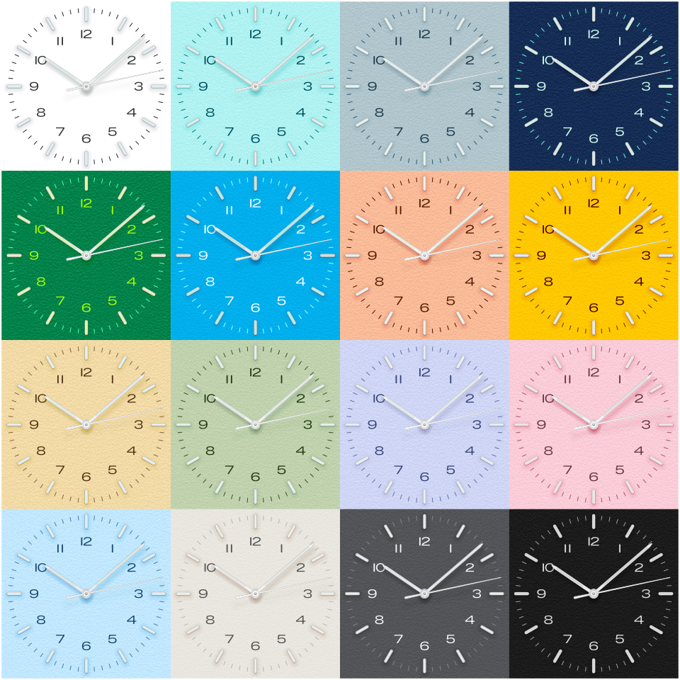
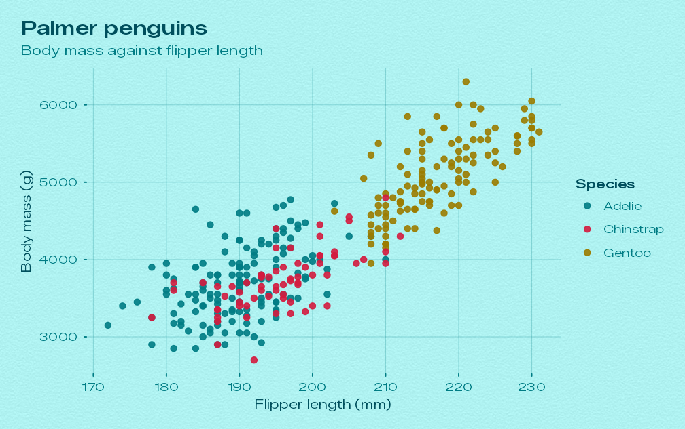
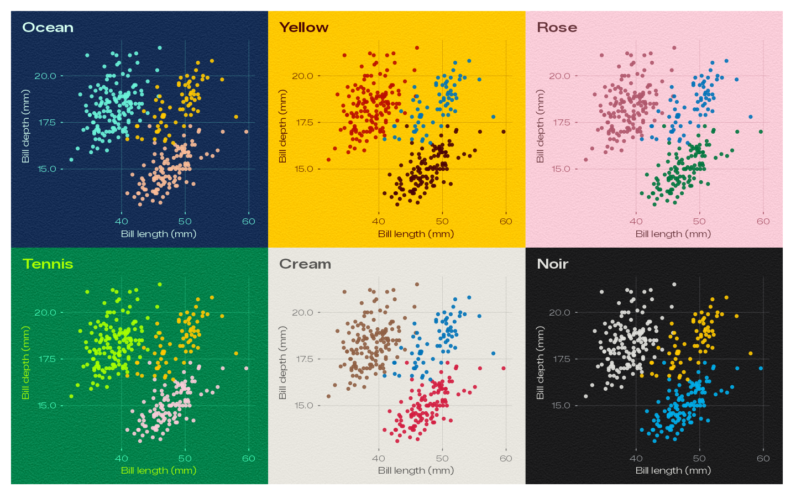
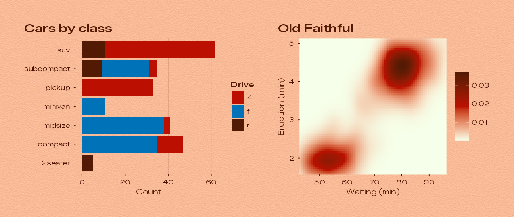
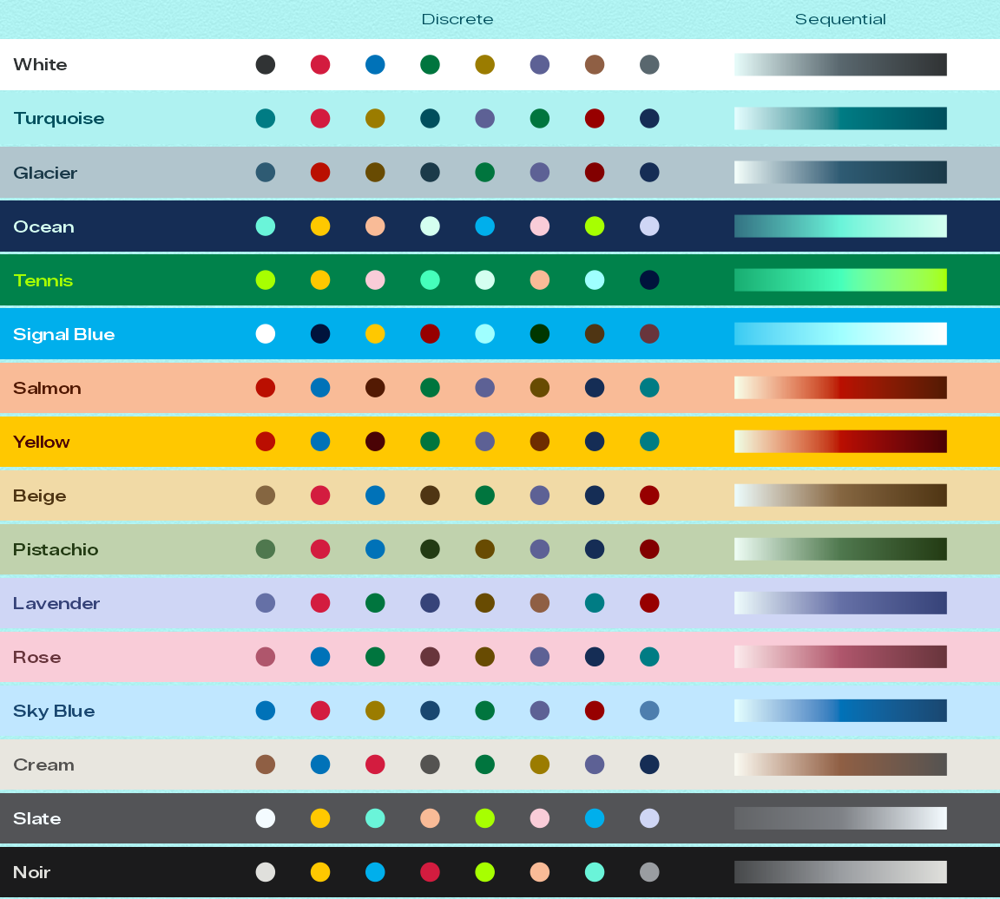
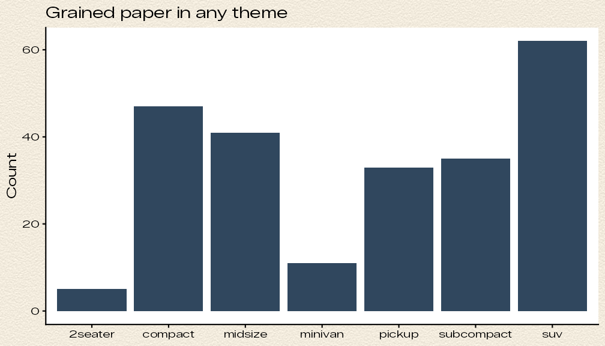
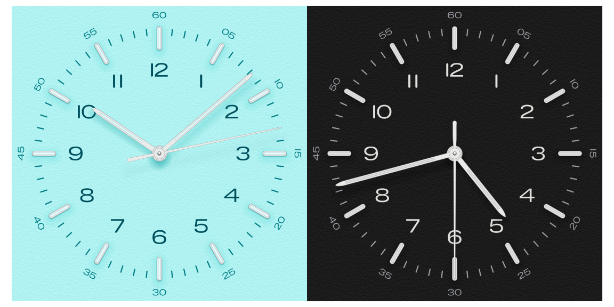

ggplot2 themes from the dials of the Bauhaus Clock screensaver.
bauhaus brings the sixteen day dials of the Bauhaus Clock macOS screensaver to ggplot2. Every theme paints the plot on the dial’s paper plate, complete with the screensaver’s fine paper grain, sets type in the screensaver’s typeface, and takes its text, grid, geom and palette colours from the inks, steel, lume and shadow tints measured on that dial.

All sixteen dials, drawn with bauhaus_clock().
- Sixteen themes: White, Turquoise, Glacier, Ocean, Tennis, Signal Blue, Salmon, Yellow, Beige, Pistachio, Lavender, Rose, Sky Blue, Cream, Slate and Noir. Only the day dials are included.
- The screensaver’s paper grain, generated with the same algorithm, kernel and seed, at the strength measured for each dial.
- The screensaver’s typeface, Zalando Sans Expanded, bundled and registered automatically.
- Matching palettes and scales: an eight-colour discrete palette and a sequential ramp per dial, set as the plot’s defaults by each theme.
-
The dial itself:
bauhaus_clock()draws the clock face, at any time, in any colourway.
See the website for a gallery of every dial and the full documentation.
Installation
bauhaus needs R 4.1 or later and ggplot2 4.0 or later. Install it from GitHub:
# install.packages("pak")
pak::pak("ashgreat/bauhaus-clock-ggplot")
# or
# install.packages("remotes")
remotes::install_github("ashgreat/bauhaus-clock-ggplot")For the bundled typeface to show up, draw with a device that uses systemfonts, such as ragg (see Fonts and devices):
install.packages("ragg")Quick start
Build a plot as usual and add theme_bauhaus(). The default dial is Turquoise, the screensaver’s own default.
library(ggplot2)
library(bauhaus)
penguins <- na.omit(palmerpenguins::penguins)
p <- ggplot(penguins, aes(flipper_length_mm, body_mass_g, colour = species)) +
geom_point(size = 1.8, alpha = 0.9) +
labs(
title = "Palmer penguins",
subtitle = "Body mass against flipper length",
x = "Flipper length (mm)", y = "Body mass (g)", colour = "Species"
)
p + theme_bauhaus()
Pick any other dial by name, or use its shortcut:
p + theme_bauhaus("ocean")
p + theme_bauhaus("Signal Blue") # case, spaces and underscores don't matter
p + theme_bauhaus_yellow()
The sixteen dials
| Dial | Theme | Paper | Numerals | Track | Grain σ |
|---|---|---|---|---|---|
| White | theme_bauhaus("white") |
#FFFFFF |
#303334 |
#292B2B |
none |
| Turquoise | theme_bauhaus("turquoise") |
#AFF2F1 |
#004F5D |
#007C84 |
3.8 |
| Glacier | theme_bauhaus("glacier") |
#B1C5CD |
#1B3A49 |
#2E5B73 |
4.8 |
| Ocean | theme_bauhaus("ocean") |
#152D55 |
#D4FFF0 |
#6AF4D9 |
5.3 |
| Tennis | theme_bauhaus("tennis") |
#00824B |
#A7FF01 |
#45FFBB |
7.8 |
| Signal Blue | theme_bauhaus("signal_blue") |
#00AFEC |
#FFFFFF |
#9FFFFF |
4 |
| Salmon | theme_bauhaus("salmon") |
#F9BB97 |
#531A03 |
#4C1200 |
5.3 |
| Yellow | theme_bauhaus("yellow") |
#FFC800 |
#4A0305 |
#6E2C00 |
4.45 |
| Beige | theme_bauhaus("beige") |
#F1DAA6 |
#4F3513 |
#856641 |
5.3 |
| Pistachio | theme_bauhaus("pistachio") |
#C0D2AD |
#233B13 |
#364F2F |
4.4 |
| Lavender | theme_bauhaus("lavender") |
#CFD6F5 |
#364379 |
#6570A6 |
4.7 |
| Rose | theme_bauhaus("rose") |
#F9CCD8 |
#68353C |
#AF566C |
4.4 |
| Sky Blue | theme_bauhaus("sky_blue") |
#C0E7FF |
#194770 |
#4D7EAE |
4.3 |
| Cream | theme_bauhaus("cream") |
#E8E6DF |
#545351 |
#B8B8B5 |
2.6 |
| Slate | theme_bauhaus("slate") |
#535457 |
#F4FBFF |
#7E8186 |
3.9 |
| Noir | theme_bauhaus("noir") |
#1B1B1C |
#E0E0DC |
#9A9DA1 |
3.9 |
The colours were measured from the screensaver’s dial artwork. Plates are defined in Display P3 and converted to sRGB; the paper is the plate lifted by 13/255, as the screensaver lifts it before adding the grain. bauhaus_colours() returns all twelve colours of a dial, and bauhaus_dials has every dial in one data frame.
bauhaus_colours("signal_blue")
#> paper plate numeral track steel
#> "#00AFEC" "#00A2DF" "#FFFFFF" "#9FFFFF" "#C3CCCE"
#> hand lume lume_hand hub shadow_core
#> "#C6CED1" "#A7FFFF" "#A1FEFB" "#B9C2C3" "#003C65"
#> shadow_ambient shadow_contact
#> "#1D547E" "#00133C"What a theme sets
theme_bauhaus() returns a complete theme, so it replaces whatever theme a plot had. It sets:
- Background: the dial’s paper with its grain, under the whole plot (panels, legends and strips are transparent).
- Type: Zalando Sans Expanded for body text and its semibold weight for titles.
- Ink: titles, axis titles and the default geom colour use the hour-numeral ink; subtitles, captions, axis labels, ticks and grid lines use the minute-track ink, with round line ends like the track’s ticks. Where the track ink is too faint to read (Cream and Slate), it is pushed towards the numeral ink.
-
Palettes: the dial’s discrete palette for discrete colour and fill, its sequential palette for continuous colour and fill, and an accent for things like
geom_smooth().
So a single theme call gives matching colours throughout:
bars <- ggplot(mpg, aes(y = class, fill = drv)) +
geom_bar() +
labs(title = "Cars by class", x = "Count", y = NULL, fill = "Drive") +
theme_bauhaus("salmon", grid = "x")
heat <- ggplot(faithfuld, aes(waiting, eruptions, fill = density)) +
geom_raster() +
coord_cartesian(expand = FALSE) +
labs(title = "Old Faithful", x = "Waiting (min)", y = "Eruption (min)", fill = NULL) +
theme_bauhaus("salmon")
(bars | heat) + plot_annotation(theme = theme_bauhaus("salmon"))
Options:
| Argument | Default | What it does |
|---|---|---|
dial |
"turquoise" |
Which dial to use. |
base_size |
11 |
Base font size in points. |
base_family, header_family
|
Zalando Sans Expanded | Font families for body text and titles. |
grain |
TRUE |
TRUE for the dial’s measured grain, FALSE for a flat plate, or a number for the strength. |
grain_density |
150 |
Grain samples per inch. Lower values give a coarser grain. |
grid |
"xy" |
Major grid lines: "xy", "x", "y" or "none". |
Set a dial for every plot in a session with theme_set(theme_bauhaus("pistachio")).
Palettes and scales
Every dial has two palettes:
- Discrete (eight colours): the dial’s signature colour and ink first, then accents borrowed from the other dials (their plates, inks and shadow tints), chosen to stand out against this dial’s plate.
- Sequential: a ramp of the dial’s own colours, from the daylight lume (on light dials) or just above the plate (on dark dials), through its signature or track colour, to its numeral ink.

Each theme already uses its dial’s palettes. Add a scale to borrow another dial’s palette, reverse one, or set other scale arguments:
| Scale | For | Palette |
|---|---|---|
scale_colour_bauhaus_d(), scale_fill_bauhaus_d()
|
discrete data | eight colours |
scale_colour_bauhaus_c(), scale_fill_bauhaus_c()
|
continuous data | sequential ramp |
scale_colour_bauhaus_b(), scale_fill_bauhaus_b()
|
binned data | sequential ramp in steps |
ggplot(mpg, aes(displ, hwy, colour = class)) +
geom_point() +
scale_colour_bauhaus_d("ocean") + # Ocean's palette on the Noir dial
theme_bauhaus("noir")The palettes are also available as colour vectors and palette functions:
bauhaus_palette("turquoise")
#> [1] "#007C84" "#D31C3F" "#9B7C00" "#004F5D" "#5D6195" "#00753E" "#970000"
#> [8] "#152D55"
bauhaus_palette("turquoise", type = "sequential", n = 5)
#> [1] "#E4FEFF" "#84BBC0" "#007C84" "#006570" "#004F5D"
pal_bauhaus("yellow")(3)
#> [1] "#BA0E01" "#0072B8" "#4A0305"The paper grain
The screensaver’s plates are not flat fills; they carry a fine paper grain. bauhaus generates the same grain, step by step:
- Uniform white noise from a 32-bit xorshift generator, with the screensaver’s seed, fills a seamless 512 × 512 tile.
- A 7 × 5 kernel measured from the original artwork turns it into short horizontal streaks, two to three samples long, with no mottling or fibres.
- The grain is scaled to unit variance, softened at the tails, and added equally to red, green and blue at each dial’s measured strength: from none on White to 7.8 code values on Tennis.
The themes draw it with element_grain(), a rectangle element that works like element_rect() and can be used in any theme. The grain is drawn at a fixed physical size, 150 samples per inch, so it looks the same on a small figure and a poster.
ggplot(mpg, aes(class)) +
geom_bar(fill = "#30475E") +
labs(title = "Grained paper in any theme", x = NULL, y = "Count") +
theme_classic(base_family = bauhaus_font_family()) +
theme(plot.background = element_grain(fill = "#F2EBDD", sigma = 6, colour = NA))
The grain is a raster image, which works on every graphics device. It makes PDF and SVG files larger; options(bauhaus.grain = FALSE) draws flat backgrounds everywhere instead.
Fonts and devices
The package bundles Zalando Sans Expanded, the typeface the screensaver’s dial numerals are set in (SIL Open Font License 1.1), and registers it with systemfonts when it loads. Nothing needs installing, as long as the graphics device uses systemfonts:
-
Files:
ggsave()uses ragg for PNG, JPEG and TIFF when ragg is installed, and svglite for SVG. -
R Markdown and Quarto: set the chunk option
dev = "ragg_png". - RStudio: Tools › Global Options › General › Graphics › Backend: AGG. RStudio’s default backend on macOS is Quartz, which can’t see the bundled font.
- Positron: uses ragg when it is installed.
Other devices don’t see the bundled font: pdf() and the default macOS screen device (Quartz) fall back to Helvetica, and the default Windows screen device to its system sans. To get the real typeface there, call bauhaus_showtext(), which registers the fonts with showtext and turns it on. bauhaus_font_files() gives the paths of the font files, if you would rather install them on your system.
The dial itself
bauhaus_clock() draws the screensaver’s dial as a ggplot: the minute track and numerals, steel hour indices with lume inlays, hour numerals (with the dial’s capsule-shaped “1”), and the three hands with their tinted shadows, on the grained plate. Everything is drawn as shapes, so it scales to any size.
bauhaus_clock("turquoise") | bauhaus_clock("noir", time = "16:42:30")
Tips
-
Combining plots: each plot draws its own background. With patchwork, add
plot_annotation(theme = theme_bauhaus("ocean"))so the space around and between the plots is paper too. -
Saving:
ggsave()picks up the paper colour as the background. Usedpi = 300for print. - Many categories: the discrete palettes stop at eight colours. Lump the smallest groups together, or use a sequential scale for ordered data.
-
Annotations: take colours from
bauhaus_colours()and the typeface frombauhaus_font_family()so labels match the theme.
Functions
| Function | Purpose |
|---|---|
theme_bauhaus(), theme_bauhaus_<dial>()
|
The themes. |
scale_colour_bauhaus_d(), _c(), _b() and the fill versions |
Colour scales. |
bauhaus_palette(), pal_bauhaus(), pal_bauhaus_c()
|
Palettes as colours and palette functions. |
bauhaus_colours(), bauhaus_dials, bauhaus_dial_names()
|
The measured colours. |
element_grain() |
The paper grain theme element. |
bauhaus_font_family(), bauhaus_font_files(), bauhaus_showtext()
|
The typeface. |
bauhaus_clock() |
Draw the dial. |
Credits and licence
The dial colours, grain and geometry come from a personal recreation of the Bauhaus Clock screensaver for macOS, which measured them from the original’s own renders. bauhaus is an unofficial project, not affiliated with or endorsed by the makers of Bauhaus Clock.
The package code is released under the MIT licence. The bundled Zalando Sans Expanded font files are © 2025 The Zalando Sans Project Authors and licensed under the SIL Open Font License 1.1 (see inst/fonts/OFL.txt).